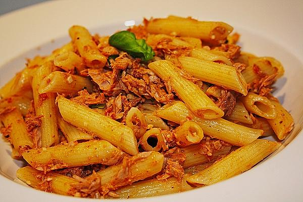

Pasta al Tonno

Description
Penne al Tonno -- Penne with Tuna in Red Sauce -- is the simplest and most delicious summer pasta recipe you need to have in your weekday arsenal.
- 1 pound dry penne
- 1/3 cup olive oil
- 1 can of tuna in olive oil
- 1 jar of premade sauce and 1 box strained tomatoes (or just use two boxes of premade pasta sauce)
- 2 teaspoons Garlic powder or granulated garlic
- 1 teaspoon Crushed red pepper flakes
- 1 teaspoon of Salt and some Garlic Powder
Steps
- Bring a pot of salted water to a boil, add the penne, and cook for 12 minutes, making sure to stir the pasta in the beginning of the boil so it doesnt stick to the bottom of the pot.
- In a large saucepan over medium high heat, add your olive oil, and when it begins to shimmer, add the capers, letting them fry for a minute.
- Add the tuna in its olive oil, and let it fry for a couple minutes. Stir.
- Add the pasta sauce, and the box of strained tomatoes. Bring to a gentle simmer, and stir, uncovered.
- Season with garlic powder, salt, pepper.
- The penne should be done by now, so drain it, and return the pasta to the same pot. Pour all the hot sauce over the penne and stir to incorporate.